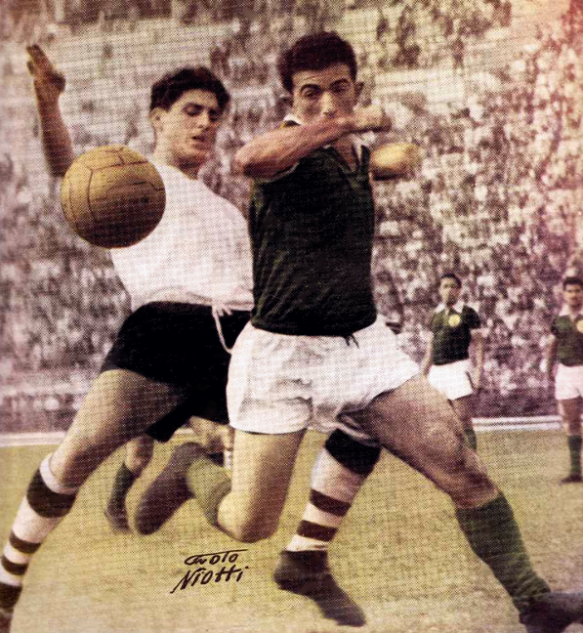

Charles Miller
Um brasileiro de origem inglesa que retornou ao pais em 1894. Miller trouxe consigo bolas, uniformes e um livro com as regras do esporte, e é considerado o pai do futebol no Brasil.
primeira partida de futebol no Brasil aconteceu em 1895, na Várzea do Carmo, em São Paulo, e contou com a participação de funcionarios das empresas San Paulo Gas Company e The São Paulo Railway Company. O futebol se popularizou rapidamente entre a elite da sociedade brasileira, mas com o crescimento urbano do pais, também se espalhou entre as camadas populares.
O Brasil é hoje uma grande potência no futebol, com a seleção brasileira detentora de cinco títulos mundiais e os clubes brasileiros com 10 títulos mundiais e 18 títulos sul-americanos.